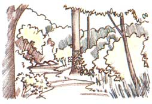

When "leaflets three'' won't let you be.
Folk treatments include gunpowder, toothpaste and horse urine.
FINALLY YOU YANK OUT THE LAST few stubborn weedsa bunch of vines with stringy roots-and stand to admire the new perennial bed you've just cleared along the edge of woods bordering your driveway. "Whew, it's hot," you think, wiping your brow. You rub your back, aching from hours of stooped-over labor, and massage a near-terminally kinked neck. Still, it feels good to have that work done; with the area grubbed out you can start planting tomorrow. Now for a nice cold drink and maybe a little nap.
You walk into the garage, toss your work gloves onto a bench and dust your shirt and pants off a bit before going upstairs. On your way to the refrigerator you stop off in the bathroom-nature calls. A few minutes later, frosty mug in hand, you settle back in an easy chair. Ahhhh. A half-hour later, you're asleep.
Poor, miserable devil.
You don't know it yet, but you've just joined at least 2 million other Americans
who, in 1989, will become all too well acquainted with the power of poison ivy or one of its near relatives-poison oak and poison sumac. Sometime within the next six to 96 hours, you're likely to find yourself agonized by an itching, watering rash on your back, neck, face, arms, legs andum, elsewhere. If you're lucky, the rash will heal after a week or two-or maybe three.
Having read the preceding scenario, you might be thinking, "Nah, that's not me. I know what poison ivy looks like. I wouldn't go pulling up handfuls of the stuff."Or maybe you're one of those who are still saying, "Nah, that's not me; I'm immune. I can wade through the stuff."
Don't be so sure on either count. Please.
When it comes to "knowing" what the plant looks like, it's wise and prudent to remember that poison ivy is not only the mosquito of the plant world but also the chameleon. Not even botanists can agree on how many kinds of poison ivies and oaks there are-or even, in some cases, which plant is which. Few life-forms (other than perhaps homo sapiens) are as variable in appearance.
Depending on the individual plant, common poison ivy is a vine, a shrub or a treelike bush-or sometimes some of each. It creeps, it stands erect, it climbs. Its leaves are sometimes green, sometimes yellow or red, sometimes lance-shaped, sometimes oval, sometimes lobed, sometimes toothed, sometimes smooth-edged, sometimes shiny, sometimes dull, sometimes spotted.
To make matters worse, the plant tends to grow in the same places as-and intermingles with-harmless but similar-looking species such as Virginia creeper, hog peanut and box elder. It hides in other ways, too. Below ground, ordinary-looking (but rash-instigating) roots extend well beyond the plant, waiting to be exposed and pulled up by an unsuspecting gardener or landscaper. And in late fall and winter, a few scraggly bare branches or a hairy climbing vine may be all that shows. So much for the old adage, "Leaflets three, let it be."
No wonder so many people who "know" what poison ivy and oak look like get The Itch over and over and over again. No wonder so many of us have spent summer months with our arms, legs and other parts encrusted in calamine lotion, our whereabouts revealed by a telltale trail of pinkstained cotton balls.
As for those of you who are convinced you're immune, the odds are stacked heavily against you. Only about 3% of humans are truly "immune" from these plants for life; the rest will eventually develop some degree of sensitivity. And the older you get, the more likely you are to find yourself suddenly susceptible-just the opposite of the oftheard belief that if you haven't broken out from poison ivy or oak by the time you're an adult, you probably never will.
I confess my status as former believe rand subsequently surprised, tortured victim-of the above untruth. I got my first case of poison ivy dermatitis at the age of 38. There's nothing like bad advice for getting a person into trouble, and it seems there's nothing quite like poison ivy and its irksome
relatives for provoking bad advice. Myths and misinformation range from the paranoid ("Some people break out in a rash just from looking at poison ivy") to the ridiculous
("Only people born in months whose spellings include an r are sensitive").
In the interest of rash-free living, let's look at some facts instead.
Don't try eating bits of leaves in an effort to build immunity!
Poison oak, poison ivy and poison sumac all belong to the cashew family, Anacardiaceae, a large group of some 600 trees and shrubs worldwide, most of them residents of the tropics. Several are known for their ability to irritate human skin.
The most infamous is the Asiatic lacquer tree, from which is derived a varnish used in the manufacture of Oriental lacquered furniture and dinnerware. People who are highly sensitive can break out in "lacquer rash" merely by touching such items. Other wellknown rash provoking kin include cashews and mangoes. Americans seldom see unhusked cashew nuts, and so much the better: Although the nutmeat itself is safe and edible, the husk oozes a juice so caustic that some South American tribes use it to burn in skin tattoos. As for mangoes, go ahead and enjoy the tasty fruit pulp-but be careful when removing the potentially irritating peel.
In this country the Anacardiaceae are limited to only about 13 species, nearly all of whichincluding poison ivy and oak-are classified as sumacs. For years, sumacs were placed in the genus Rhus, but recently botanists have put the poisonous varieties in a separate genus, Toxicodendron. The debate continues over how many distinct species and varieties exist, but there is general agreement that the four most widespread toxicodendrons in the U.S. are poison ivy (T. radicans), western poison oak (T diversilobum), eastern poison oak (T. toxicarium, sometimes dubbed T. quercifolium) and poison sumac (T. vernix).
Some people call eastern poison oak "oak leaf poison ivy," and others use the terms poison ivy and poison oak pretty much interchangeably. No matter. Call them what you will, the important thing here is that all toxicodendrons produce urushiol (pronounced oo-ROO-shee-ohl), a combination of skin-irritating chemicals found in the plants' sticky sap.
Urushiol varies slightly in composition from species to species (poison sumac's is considered the most potent), but its work is consistent. Within 10 to 15 minutes after you get the substance on you, it's carried into the dermis (the inner skin layer) and bonds with skin protein to form an antigen. The first time this occurs, nothing obvious happens no one is "born sensitive" to urushiol. But your body may begin to build defenses against the antigen, and each subsequent exposure may prompt a further build-up.
Depending on your genetic heritage (and, to some extent, on the frequency with which you're exposed), the defense-building process can be rapid or can take years. But sooner or later most people's immune systems develop some degree of distinct biological distaste for the urushiol-spawned antigen. At that point, whenever the antigen's presence is detected-in other words, almost any time you get urushiol on you-enraged white corpuscles known as T cells rush to the hated invader and attack, releasing chemicals that literally destroy the surrounding skin. The resulting reddened, itching, blistered battleground is better known as poison ivy (or oak, or sumac) dermatitis.
Technically speaking, those who say they're "immune" actually don't get a rash because in fact they aren't immune. Those of us whose bodies have decided to stand and fight the dreaded alien from outer-skin space are immune, and have only our own overaggressive T cells to thank for small favors.
Urushiol is found in all parts of toxicodendron plants-contrary to common myth, you can get a rash not only from touching the leaves but also from the roots, stems, flowers or berries. Theoretically, brushing against a plant shouldn't cause problems at all, because urushiol is carried in internal plant-tissue canals that don't connect to the surface. Gently touching an intact plant is perfectly safe-or so they say. The trouble is that plants are seldom intact. Even slight damage-such as that caused by an animal's footsteps or by chewing insects-is enough to bring urushiol to the surface.
And remember that the sap is sticky. You don't have to touch a plant to get The Itch; you can always pick it up secondhand. Animals, perhaps because of their fur and tough skin, aren't bothered by the irritant. But your own tender hide may be in trouble if you pet the family dog or cat after it comes back from a stroll in the woods (or if you step on a plant and then touch your boots or if you dig up some poison ivy or oak and then touch the working end of the shovel).
Time doesn't help much, either. Urushiol is astonishingly stable. Archaeologists and botanists have broken out after handling plant specimens that were centuries olda point worth remembering when you go to sharpen the blade on the weed whacker you used to clear undergrowth two years ago.
Obviously, the best way to deal with urushiol is to avoid it altogether, and the best way to do that is to learn how to spot poison ivy, oak and sumac and to stay away from them.
Unfortunately, these plants are too easy to overlook and too widespread to expect to avoid forever if you hike, camp, garden or otherwise spend time outdoors. Poison ivy grows almost coast-to-coast and border-to-border; western poison oak is California's most common shrub. And poison sumac, although somewhat more distinctive, has a tendency to pop up in unexpected places. Unless you live in Nevada-the only state in the contiguous U.S. that's entirely free of Toxicodendron species-you and urushiol are likely to cross paths sometime.
At least you can dress for the occasion. Wearing protective clothing when you're in likely toxic-plant habitat can help minimize exposure-but be forewarned that it won't prevent contact entirely. Given a chance, urushiol in sufficient quantities can pass through virtually anything you wear, including leather and even rubber gloves. Light clothing offers little more than no protection; get urushiol on your hands, rub your hands on your jeans or T-shirt, and the irritant will penetrate to your skin.
Over the years, many people (including the late Euell Gibbons) have touted the notion that you can "desensitize" your body to urushiol by eating bits of young poison ivy or oak leaves each spring, thus building up an "immunity." This approach may work for some-notably, those who naturally aren't affected by the antigen anyway-but for most the procedure is dangerous and fraught with side effects, not the least of which can be rashes at both ends of the digestive system. People whose work takes them into toxic-plant territory-foresters and utility workers, for instance-are sometimes given a series of injections or pills in minuscule doses over several months to build a resistance. Results have been inconsistent, however, and the practice has sometimes provoked serious reactions.
It doesn't take urushiol much time to bond with flesh proteins, so if you know or suspect you've gotten into poison ivy, the first thing to do is to flush the exposed areas with cold water for several minutes. Cold water not only closes the pores to prevent further penetration of the irritant but also combines chemically with urushiol, converting it to a relatively harmless substance.
The second thing to do is to remove any remaining urushiol before you have a chance to spread it to other parts of your body. Washing exposed areas with mild soap can help. Better yet, flush the areas with liberal quantities of a gentle solvent such as rubbing alcohol or vinegar (don't just dab it on, or you'll merely smear the urushiol around), then wash with soap and water. Don't use strong solvents such as kerosene, turpentine, nail polish remover or the like, because they remove natural protective skin oils, making it easier for the irritant to bond to your flesh. Likewise for strong laundry soap. And speaking of laundry, be sure to toss your clothes into the washing machine after you've been walking or working in possible poison-plant territory. Wash them separately from other clothing, and if you believe the garments are heavily contaminated, wash them a couple of times just to be safe.
In recent years good results have been reported with a commercial urushiol-removal product, Tecnu Poison Oak-N-Ivy Cleanser. It's said to neutralize skin, clothing, footwear and tools and is available from outdoor and garden supply companies.
Often, though, you can find a good poison-ivy neutralizer within reach of the plants themselves: Jewelweed (also known as touch-me-not) is common in the eastern U.S. and has long been used to ward off rashes. If you find that you've gotten into poison ivy, grab a handful of jewelweed leaves, flowers or stems, crush them, and rub them on your skin to release the juice.
Though prompt removal or neutralization of urushiol can save you from getting a severe rash, chances are you'll still end up with at least some bumps and bubbles. It usually takes a few hours to a few days for a toxicodendron instigated rash to appear. The sooner you start treating it, the better.
There are probably as many home remedies for treating poison ivy/oak/sumac rashes as there are for the common cold; more, maybe. Among them are such unlikely (if not outright disgusting) topical medications as gunpowder, shoe polish, toothpaste, crawfish flesh and horse urine. (Desperation can drive a person to try anything, I suppose.)
For mild cases of poison ivy, applying moist compresses or soaking in cold water may be enough to ease the itching. Aloe vera gel, which can be squeezed from the plant of the same name or purchased in health food stores and drugstores, soothes and seems to promote healing. So do various herbal teas (not to be consumed, mind you, but applied to the rash). Jewelweed, plantain, oak bark (or leaves or acorns), rhubarb leaves, ragweed, dock, gum plant (grindelia), garlic and goldenseal are among the more common and more highly praised rash-healing herbs. To make a tea, just pour a quart or two of boiling water over about a handful of any one of the aforementioned plants, let it steep, then cool and strain the liquid, and dab it on your rash as needed. (Never use such teas, however, on open sores; because they're nonsterile, they could cause infection.) If you have an all-over rash, make a more concentrated tea, and add some to your bath.
Another popular bath-added medicant is oatmeal; you can buy a commercial oatmeal preparation (Aveeno), or make your own by wrapping about a half cup of uncooked rolled oats in a piece of cloth and letting the cereal soak in the bath water. Squeeze the bundle from time to time-or simply use it as your washcloth-to release a solution that will help dry up the blisters.
For some (including myself), bathing or showering in very hot water produces relief by "bringing out" the itch. Under the hot water, the rash itches intensely-to the point that it can only be called perverse pleasure-but afterward you can be itch-free for up to several hours. (It is not true, incidentally, that hot water can spread a rash. It is also not true that the fluid in the blisters can spread or cause a rash; clinicians have found no evidence of urushiol or other irritants in the blister fluid.)
Also, of course, many effective over-the-counter medications-herb-based and otherwiseare available to help soothe the rash, dry up the blisters and/or ease the itching.
Ask your doctor or pharmacist for recommendations. And be sure to read the labels before you buy or apply such preparations. Some shouldn't be used on raw or blistered areas; others aren't intended for children.
A few final words of warning: If your rash becomes severe or shows any sign of complications, or if you experience unusual swelling, dizziness, breathing difficulty or other symptoms of illness after being exposed to poison ivy, see a doctor. Infection is a real danger in serious cases of contact dermatitis, and systemic toxicodendron poisoning from exposure to poison ivy, oak and sumac, though rare, does occur and can lead to kidney failure. Never try to "tough out" a bad case.
There's nothing like poison ivy for provoking bad advice!
Poison ivy, oak and sumac cause misery and suffering on a scale approaching the incomprehensible. The USDA estimates that more than 2 million cases occur each year, causing in excess of a third of a million lost work days. According to the American Medical Association, poison oak is responsible for more than half of all the workers' compensation cases in California.
No wonder most of us think "kill" when we find a patch of poison oak at the edge of the yard or notice a poison ivy vine twining around the family's favorite apple tree.
Eradicating the plants, though, is easier said than done. If you happen to have a goat, the animal will happily consume the offending plants-along with most of the other vegetation in the area. You can pull the stuff up, but it's a risky job at best-you're almost sure to get a rash, no matter how careful you are-and chances are you won't get all the plants. Poison oak and ivy roots can extend 20 feet or more in all directions, and if you don't remove them, they'll just send up more shoots. Besides, what are you going to do with the pulled-up parts? Never burn poison ivy, oak or sumac; tiny droplets of urushiol are carried in the smoke and can be breathed into your lungs, causing internal dermatitis (smoke from burning poison oak and ivy is a serious hazard for forest firefighters). About the only remaining option is to spray the plants with chemical herbicides, of which most require repeat applications and many kill any other vegetation they touch.
If the offending plants are in your yard or in the path to your garden or in an area where children play, there's good reason to go after them with a vengeance. But otherwise, you might try peaceful coexistence. After all, the plants aren't all bad.
Consider, for example, that the berries from poison oak and ivy are an important source of food for a variety of birds, especially during the winter, when other fruit is scarce. And the leaves provide cover for birds and small mammals.
Besides, the plants serve an important function for humans, too: They remind us to open our eyes and really look and see when we're outdoors. They're sly and able teachers of nature awareness; specialists in educating the unwary, the unwise and the unobserving.
A case of poison ivy (or oak, or sumac) dermatitis is nature's way of saying "pay attention. " Somehow, there's beauty in that.
|
 ILLUSTRATION BY KAY HOLMES STAFFORD |
|
|